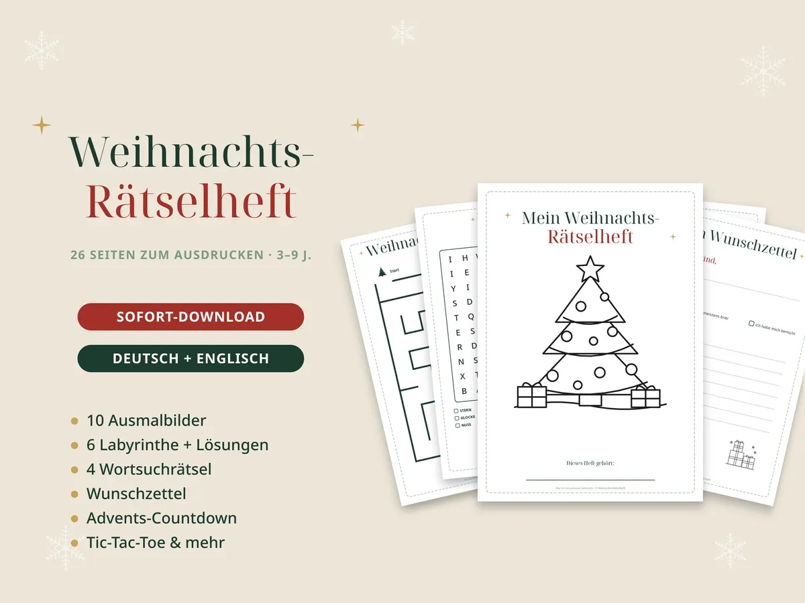

Brief vom Christkind oder Nikolaus: Formulierungen und Ideen

Ein persönlicher Brief vom Christkind oder Nikolaus ist für Kinder etwas ganz Besonderes. Mit ein paar Details – Name, ein echtes Erlebnis aus dem Jahr – wird er glaubwürdig und unvergesslich.
Was in den Brief gehört
- Der Name des Kindes und sein Alter
- Ein konkretes Lob: „Ich habe gesehen, wie du deiner Schwester beim Anziehen geholfen hast.“
- Etwas, das es gelernt hat: Fahrradfahren, Schwimmen, die ersten Buchstaben
- Ein kleiner Wunsch fürs nächste Jahr – freundlich, nie drohend
- Ein P.S. mit einem Geheimnis, zum Beispiel: „Die Rentiere lieben deine Haferflocken.“
Mustertext: Brief vom Christkind
vom Himmel aus habe ich dich das ganze Jahr beobachtet – und ich bin sehr stolz auf dich! Du hast in diesem Jahr Fahrradfahren gelernt und warst so mutig beim Kinderarzt. Besonders gefreut hat mich, wie lieb du dich um deinen kleinen Bruder kümmerst.
Deinen Wunschzettel habe ich gut bekommen. Ich gebe mir Mühe!
Frohe Weihnachten wünscht dir
dein Christkind
P.S. Die Engel haben deine gemalten Sterne an die Himmelstür gehängt.
Christkind oder Weihnachtsmann?
Im Süden und Westen Deutschlands, in Österreich und der Schweiz bringt meist das Christkind die Geschenke, im Norden und Osten eher der Weihnachtsmann. Es gibt kein Richtig oder Falsch – nehmt, was in eurer Familie Tradition ist.
Ideen für den Nikolausabend
- Ein kleiner Brief im Stiefel: „Du warst brav – der Nikolaus war da!“
- Mandarinen, Nüsse und ein Schokoladen-Nikolaus
- Ein Hinweis auf den Adventskalender oder den nächsten Ausflug
Die Heiligabend-Box
Eine Kiste, die am Morgen des 24. Dezember auf die Kinder wartet: Schlafanzug, ein Weihnachtsbuch, Kakao und ein Brief. Dazu passt Zauber-Rentierfutter aus Haferflocken und etwas Zucker, das abends vor die Tür gestreut wird – ohne Glitzer, damit Vögel es fressen dürfen.
Fertig zum Ausfüllen und Ausdrucken
Briefe vom Christkind, Weihnachtsmann und Nikolaus
31 Seiten mit echten Formularfeldern: Name und P.S. am PC eintippen, drucken, fertig. Mit Nikolausbrief, Brav-Urkunde, Wunschzetteln, Heiligabend-Box und Rentierfutter-Anhängern.
Ansehen auf Etsy
Weihnachts-Rätselheft für Kinder
26 Seiten mit Ausmalbildern, Labyrinthen, Wortsuchrätseln, Wunschzetteln und Countdown – für Kinder von 3 bis 9.
Ansehen auf EtsyDas brauchst du noch
Werbung: Die Links führen zu Amazon (Affiliate-Links). Als Amazon-Partner verdiene ich an qualifizierten Verkäufen. Für dich ändert sich der Preis nicht.